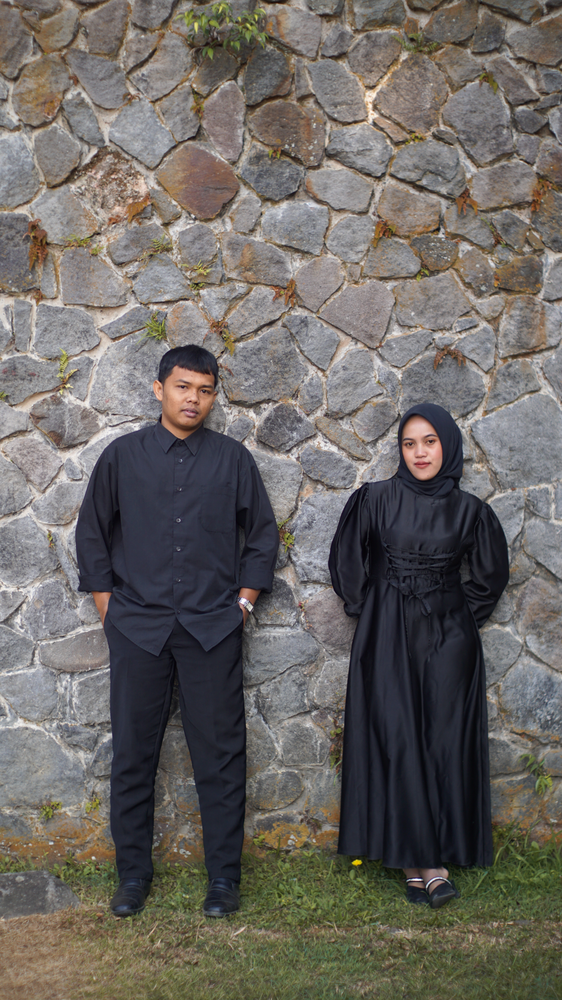
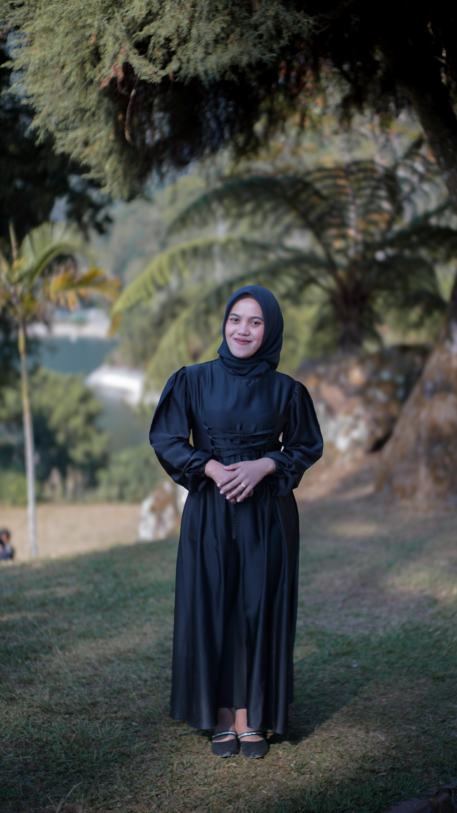
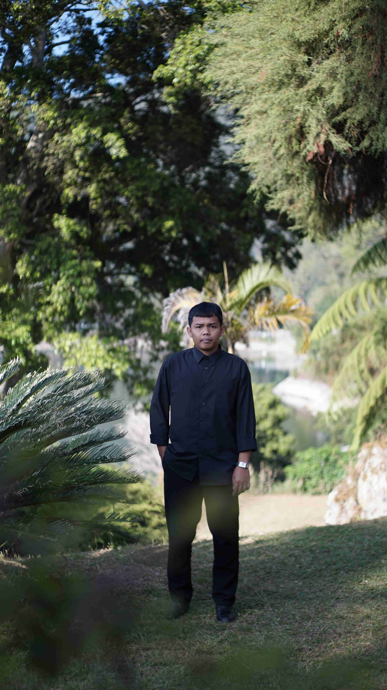
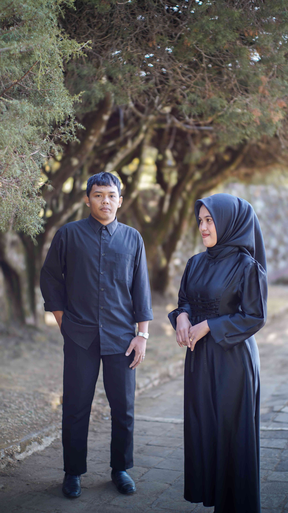
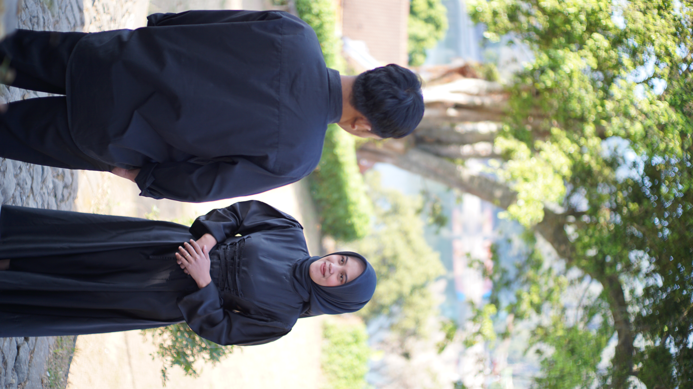
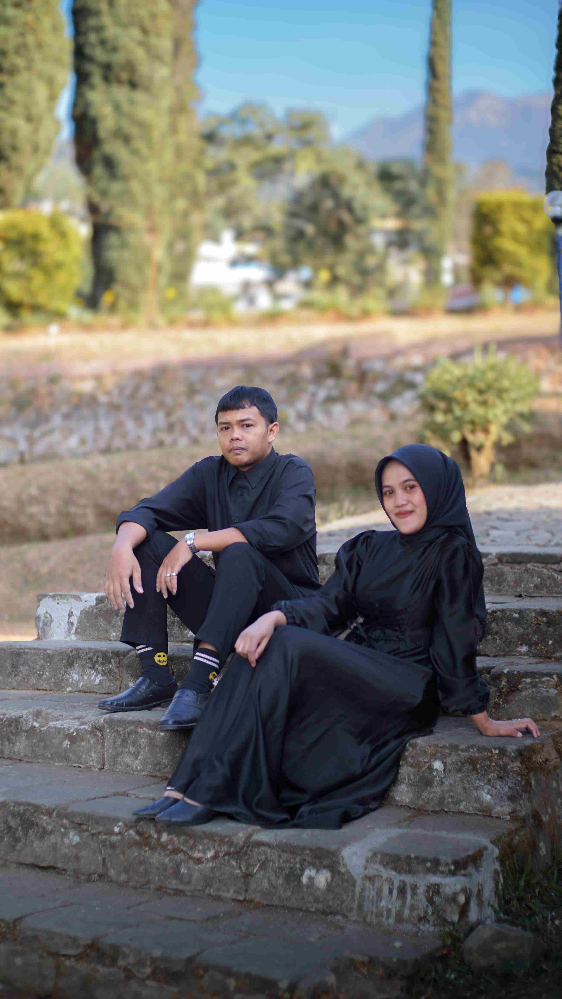
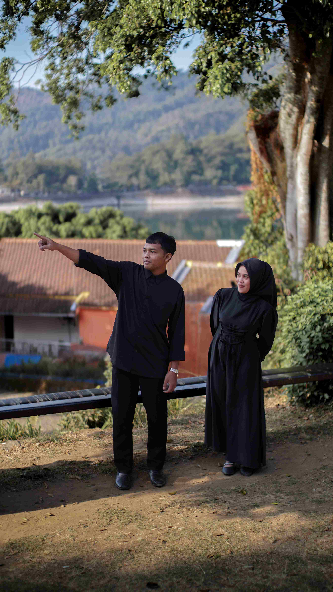

MINGGU · 15 NOVEMBER 2026

Foto utamaBismillahirrahmanirrahim
Di antara tanda-tanda kekuasaan-Nya ialah Dia menciptakan pasangan untukmu dari jenismu sendiri, agar kamu merasa tenteram kepadanya, dan Dia menjadikan di antaramu rasa kasih dan sayang.
QS. Ar-Rum : 21

Foto mempelai wanitaNovi Puspita Sari
Putri dariBapak Poniman & Ibu Paniati
&

Foto mempelai priaUbaid Aris Nasrulloh
Putra dariAgus Gunawan & Ibu Margiati
Save the Date
0Hari
0Jam
0Menit
0Detik
Akad Nikah
Minggu, 15 November 2026
Pukul 08.00 WIB – selesai
Kediaman mempelai wanita
Dk. Prendetan Rt.15 Rw.03 Ds. Puntukdoro Kec. Plaosan Kab. Magetan
Resepsi
Minggu, 15 November 2026
Pukul 10.00 WIB – selesai
Gedung Serbaguna Madiun
Dk. Prendetan Rt.15 Rw.03 Ds. Puntukdoro Kec. Plaosan Kab. Magetan
Galeri

Foto 1
Foto 2
Foto 3
Foto 4RSVP & Ucapan
Kehadiran dan doa Anda adalah kado terindah bagi kami.
Tanda Kasih
Bila ingin memberi tanda kasih, dapat melalui amplop digital.
Bank BCA1234567890a.n. Novi Puspita Sari
Terima kasih
Novi & Ubaid
Terima kasih atas doa dan kehadiran Anda.